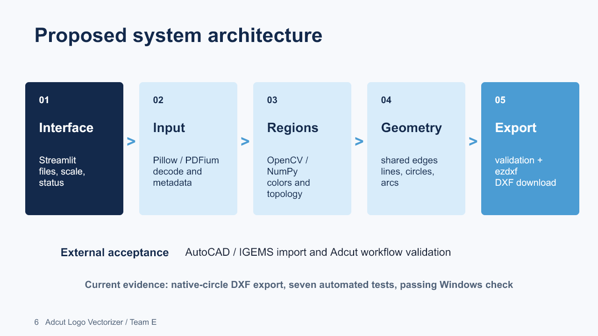
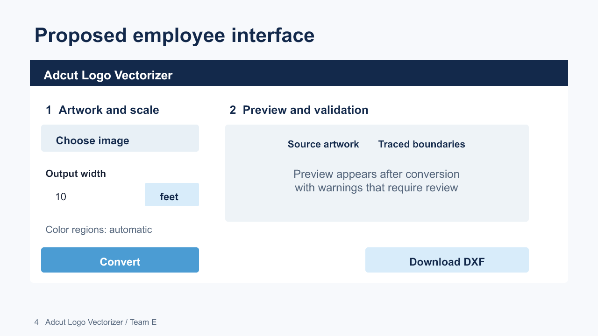

Team E / October 4, 2026
Midterm materials
All teams must be ready October 5 at class time. Presentation sessions are October 5, 7, and 12, in random order. All students attend all sessions. The 10-12 minute slot includes questions and transitions. No application demo is required.
Download the visual eight-slide PowerPoint · Exact slide-by-slide script and Q&A · Technical design document
Specifications · Platform decision · Architecture · System metaphor · UI mockup
The presentation includes all five required content areas, four subject-specific visuals, editable interface and architecture diagrams, and a complete word-for-word script in the speaker notes. Generated images are representative illustrations, not photographs of Adcut's equipment or output. The current implementation is a tested DXF export foundation. Team review, rehearsal, and instructor submission must occur separately.
Course deadlines and submission status
Course checklist as of October 4
| Requirement | Course timing | Current status / remaining task |
|---|---|---|
| Website and URL submission | End of week of Aug. 24; repeated Sept. 2 | Website published. Team must verify URL email and instructor access. |
| Updated project page for coach meetings | End of week of Sept. 7 | Website updated. Any unrecorded meetings still need actual notes. |
| Specifications | End of week of Sept. 14 | Published and updated Oct. 4. Detailed Adcut validation remains open. |
| Platform selection | End of week of Sept. 21 | Starting platform documented Oct. 4 below. Installation and full application development remain. |
| Tech-talk topic email | End of week of Sept. 21 | Submission unverified. Proposed topic: native CAD curves versus segmented raster tracing. Team must agree and email the instructor. |
| Architecture and system metaphor | End of week of Sept. 28 | Midterm design baseline published Oct. 4, including component contracts and validation strategy. |
| Midterm PowerPoint | Ready Oct. 5 at class time | Eight-slide presentation with full speaking notes published. Team review and rehearsal remain. |
| Ethics assignment | End of week of Oct. 19 | Upcoming. Review the assignment and agree a team work plan. |
Dates follow the Fall 2026 section of the course calendar. End-of-week entries do not specify an exact hour. Older semester material on that page is not used here.
Selected starting platform
Selected October 4 for initial implementation: Python 3.11, Streamlit, OpenCV, NumPy, Pillow, ezdxf, and pypdfium2 for later PDF import. Development uses VS Code and GitHub, with pytest, Ruff, and pre-commit. Target: Windows with a local browser interface. Hardware requirements will be measured against representative artwork.
This local-first choice keeps processing in one Python codebase and avoids a hosted service for the initial workflow. The client allows cloud deployment; it is not prohibited. React/Vue would support richer editing but require a separate frontend and API. Potrace/vtracer remain comparison options; tracing alone does not establish native arc quality. PyInstaller packaging is deferred until the core workflow is reliable.
DXF is the first output target. ezdxf does not provide a standalone native DWG writer; a separate conversion approach needs a licensing and feasibility review. SVG is the fallback. R2000 is only a development default, pending target-tool confirmation.
References: Streamlit, OpenCV contours, ezdxf, pypdfium2.
Development repository (private; access required). The foundation contains a native-circle DXF exporter and tests. Image-to-DXF conversion is not yet implemented.
System architecture

The interface passes source files and explicit scale settings to input adapters. Processing identifies regions and constructs shared boundaries, then fits supported geometry. Export serializes the geometry into CAD files. AutoCAD/IGEMS import and Adcut acceptance are external validation steps, not implemented integrations. Native-circle export has a test fixture; arc fitting and shared-boundary tracing remain to be developed.
The technical design document defines component inputs and outputs, region topology, coordinate transforms, UI states, input policies, test cases, and unresolved client decisions. Shared-edge references preserve adjacency internally; the downstream convention for separate closed regions versus deduplicated cut edges still needs confirmation.
System metaphor: a digital stencil workshop
Artwork is the pattern. Distinct color sections become stencil pieces, tracing defines each piece's edge, and curve fitting smooths its cutting geometry. DXF packages those templates for downstream CAD preparation. This shared vocabulary describes the intended system; it does not imply the application drives the water jet.
User interface mockup

Static design draft. Exact controls and optional preview remain subject to sample-driven validation. The scale field must represent an explicit output dimension; it must not be guessed from pixel count.
Interaction states
Ready: choose artwork and enter a physical width and units. Processing: report the active stage and prevent duplicate requests. Needs correction: identify invalid inputs or geometry issues and preserve settings. Complete: provide the export with any warnings. Changing the input or settings invalidates the previous download.
Before class
- All four members review and revise the slides and confirm they can explain the selected platform and proposed architecture.
- Confirm the suggested speaking split: Jennifer, slides 1-2; Hamsini, slides 3-4; Vibhas, slides 5-6; Alex, slides 7-8. Full speaker notes target 8 minutes 20 seconds, leaving questions and transition time within the 10-12 minute slot.
- Perform a timed run-through together and adjust the split. The course page's per-person estimate does not fit four speakers in the total slot; follow the total limit and ask the instructor if clarification is needed.
- Download and open the PowerPoint on the presenting computer; verify the display connection or podium access.
- Confirm or submit the tech-talk topic and website URL to the instructor. No email has been sent by this update.
Requirements: Midterm presentation instructions.